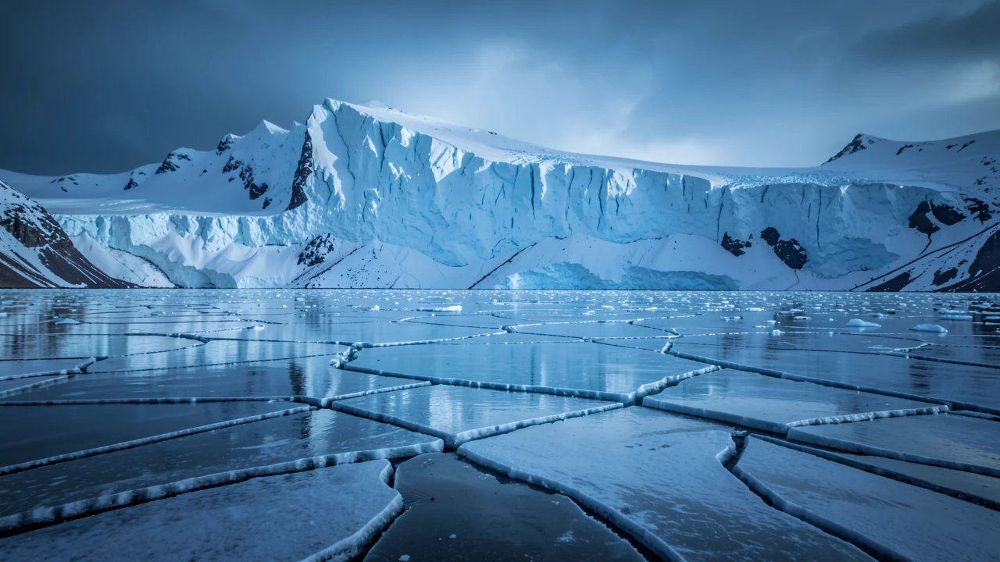

अंतिम हिमयुग केवल एक बुरा दौर नहीं था।
AI द्वारा निर्मित: इस पृष्ठ का पाठ, चित्र और अन्य मीडिया कृत्रिम बुद्धिमत्ता से बनाए गए हैं और इनमें त्रुटियाँ हो सकती हैं।
ऊनी स्वेटर और भारी जूते भूल जाइए; हमारे ग्रह पर होने वाली भीषण ठंड की घटनाओं को समझना, वास्तव में, वर्तमान भीषण गर्मी से निपटने का सबसे महत्वपूर्ण उपाय है।

भीषण ठंड का दौर
लगभग बीस हजार साल पहले, अंतिम हिमयुग के चरम पर, पृथ्वी पूरी तरह से ‘फ्रिज मोड’ में थी। हम एक ऐसे समय की बात कर रहे हैं जब बर्फ की विशाल चादरें पूरे महाद्वीपों को निगल रही थीं, जिससे ऐसे परिदृश्य बन गए जो आरामदायक सर्दियों के अद्भुत दृश्य से कम और महंगे हॉरर फिल्म सेट से अधिक लगते थे। यदि आपको लगता है कि थोड़ी सी बर्फबारी के कारण आपकी सुबह की यात्रा कठिन हो जाती है, तो कल्पना कीजिए कि एक ऐसी दुनिया कैसी होगी जहां आपके जीवन का भूगोल ही किलोमीटरों में जमी हुई बर्फ के नीचे दब रहा हो।

यह सिर्फ एक अस्थायी दौर नहीं था, जैसे कि वह संक्षिप्त अवधि जब हर कोई सोचता था कि लो-राइज जींस एक अच्छा विचार है। अंतिम हिमयुग हमारी पृथ्वी के सांस लेने, चलने और रहने योग्य बने रहने के तरीके में एक बड़ा, संरचनात्मक बदलाव था। यह अत्यधिक अस्थिरता का समय था, जहां जीवित रहने की संभावनाएं इतनी कम थीं कि जैसे किसी बेसमेंट में वाईफाई सिग्नल कमजोर हो।
मुख्य तंत्र: पृथ्वी ठंडी क्यों हो जाती है
तो, एक ग्रह कैसे यह तय करता है कि वह जम जाए? ऐसा इसलिए नहीं है क्योंकि किसी ने थर्मोस्टेट को कम करने में भूल कर दिया। इसमें कक्षीय अस्थिरता, वायुमंडलीय कार्बन डाइऑक्साइड के स्तर और सूर्य की रोशनी के ध्रुवों पर पड़ने के तरीके का एक जटिल, अक्सर भयानक नृत्य शामिल होता है। वैज्ञानिक दीर्घकालिक जलवायु पैटर्न को समझने के लिए इन चक्रों का अध्ययन करते हैं, और यह पता लगाने की कोशिश करते हैं कि क्या हम किसी प्राकृतिक बदलाव या स्थायी पतन को देख रहे हैं।
पृथ्वी को एक घूमने वाले शीर्ष की तरह समझें जो थोड़ा असंतुलित है। हजारों वर्षों तक चलने वाले चक्रों में, अक्ष का झुकाव और पृथ्वी की कक्षा का आकार थोड़ा बदल जाता है, जिससे उत्तरी गोलार्ध पर पड़ने वाली सौर ऊर्जा की मात्रा में बदलाव आता है। जब ऐसा होता है, तो बर्फ फैलनी शुरू हो जाती है। यह एक धीमी गति से चलने वाला हिमस्खलन है जिसे बनने में सदियाँ लगते हैं, लेकिन यह दुनिया के मानचित्र को मौलिक रूप से बदल सकता है।
अंतिम हिमयुग केवल ठंडा नहीं था; इसने पृथ्वी के संपूर्ण पारिस्थितिकी तंत्र और भूगोल को मौलिक रूप से पुनर्गठित किया।
डेटा बनाम मानवीय कहानी
यहां समस्या यह है: आप कार्बन के भागों-प्रति-मिलियन की एक स्प्रेडशीट को तब तक देख सकते हैं जब तक आपकी आँखें थक न जाएं, लेकिन संख्याएँ भय व्यक्त करने में बहुत खराब हैं। आप पीछे हटते ग्लेशियरों का एक ग्राफ़ दिखा सकते हैं, लेकिन वह ग्राफ़ आइसलैंड में वतनाजोकुल ग्लेशियर के किनारे पर खड़े होकर इतिहास के एक टुकड़े को पानी में बदलते हुए देखने की भावना को नहीं दर्शाता है।

यहीं पर कहानी कहने का महत्व आता है। हमें यह समझने के लिए केवल जलवायु विज्ञान डेटासेट की तुलना में अधिक की आवश्यकता है; हमें हानि और परिवर्तन की कहानी की आवश्यकता है। जब हम हिमयुग के बारे में बात करते हैं, तो हम केवल मृत विशालकाय जानवरों के बारे में बात नहीं कर रहे हैं; हम उन लोगों के पूर्वजों के बारे में बात कर रहे हैं जो उन जमी हुई मैदानों पर चलते थे। डेटा हमें बताता है कि तापमान कम हो गया, लेकिन कहानियाँ हमें बताती हैं कि जीवन ने कैसे अनुकूलन किया, संघर्ष किया और जीवित रहा।
एक वैज्ञानिक पत्रिका में एक बार चार्ट को अनदेखा करने की तुलना में, पिघलते हुए परिदृश्य में अपने वंश का पता लगाने वाली एक परिवार की कहानी को अनदेखा करना बहुत कठिन है। पूर्व को आसानी से अनदेखा किया जा सकता है; बाद वाला आपके दिमाग में एक आकर्षक, थोड़ी निराशाजनक गीत की तरह अटक जाता है।
क्यों यह वास्तव में मायने रखता है (नहीं, वास्तव में)
मैं जानता हूं, मैं जानता हूं। 'यह हजारों साल पहले हुआ था, मुझे क्यों परवाह करनी चाहिए?' क्योंकि वही तंत्र जो हिमयुगों को संचालित करते थे, वर्तमान में मानवीय गतिविधियों द्वारा उपयोग किए जा रहे हैं। हम अनिवार्य रूप से एक टूटे हुए रिमोट कंट्रोल का उपयोग करके ग्रह के थर्मोस्टेट के साथ खेल रहे हैं। हम तेजी से जलवायु परिवर्तन का अनुभव कर रहे हैं जो अतीत के प्राकृतिक चक्रों की तुलना में बहुत तेजी से आगे बढ़ रहा है।
मानवीय हस्तक्षेप से होने वाले बदलाव जलवायु परिवर्तन को प्राकृतिक हिमयुगों की तुलना में बहुत तेजी से आगे बढ़ा रहे हैं।
यदि हम पृथ्वी की 'कहानी' को समझने के लिए सीख सकते हैं - बर्फ कैसे चलती है, समुद्र का स्तर कैसे प्रतिक्रिया करता है, पारिस्थितिक तंत्र कैसे ढहते हैं - तो हम वास्तव में अपने अध्याय के लिए एक बेहतर अंत लिखने का अवसर प्राप्त कर सकते हैं। हिमयुग हमें सिखाता है कि पृथ्वी बड़े पैमाने पर, अटूट परिवर्तनों में सक्षम है। सवाल यह है कि क्या हम चेतावनी के संकेतों को पढ़ना सीख सकते हैं इससे पहले कि 'फ्रिज मोड' हमारी स्थायी वास्तविकता बन जाए?
अगली बार जब आप पिघलते ग्लेशियर के बारे में कोई समाचार रिपोर्ट देखें, तो केवल द्रव्यमान हानि के प्रतिशत को न देखें। अपने आप से पूछें: पृथ्वी हमें यह बताने की कोशिश कर रही है कि हम कहां जा रहे हैं?